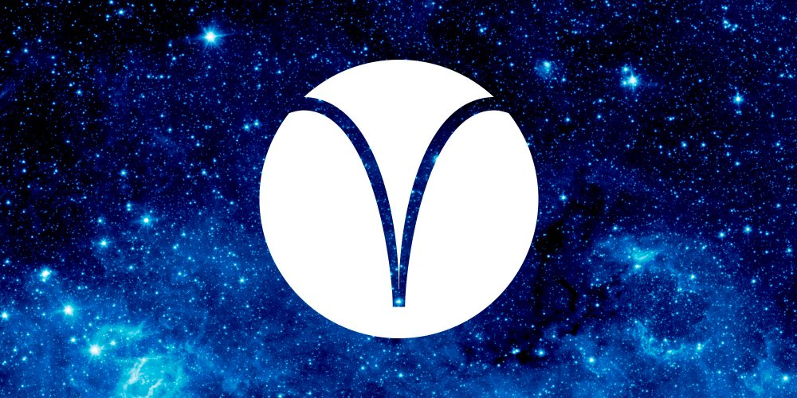
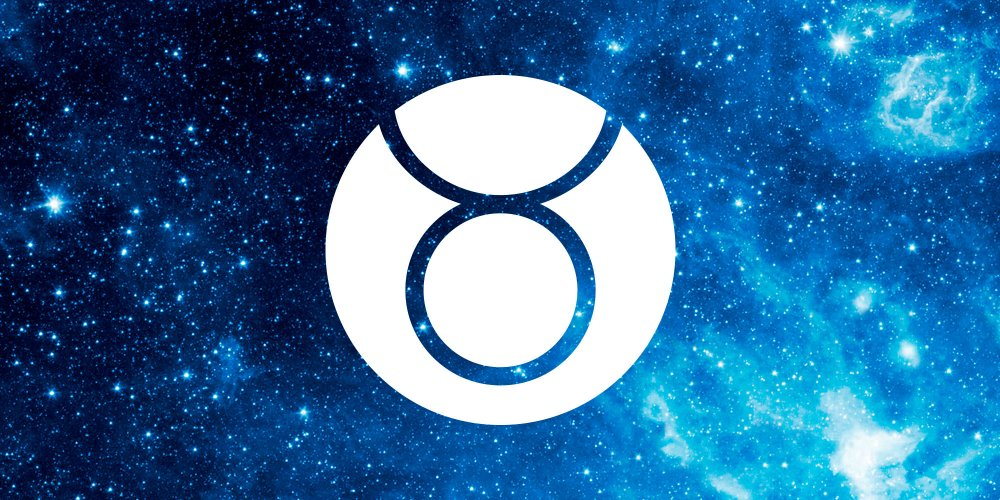
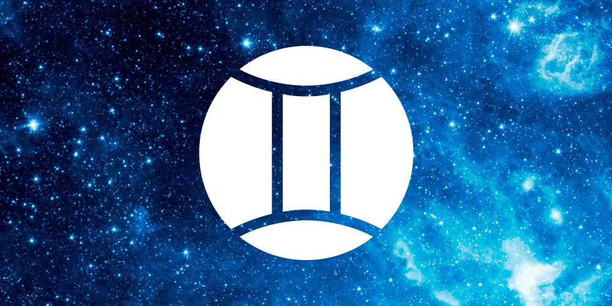
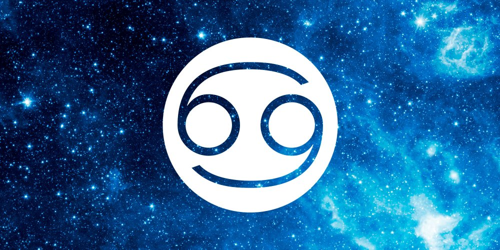
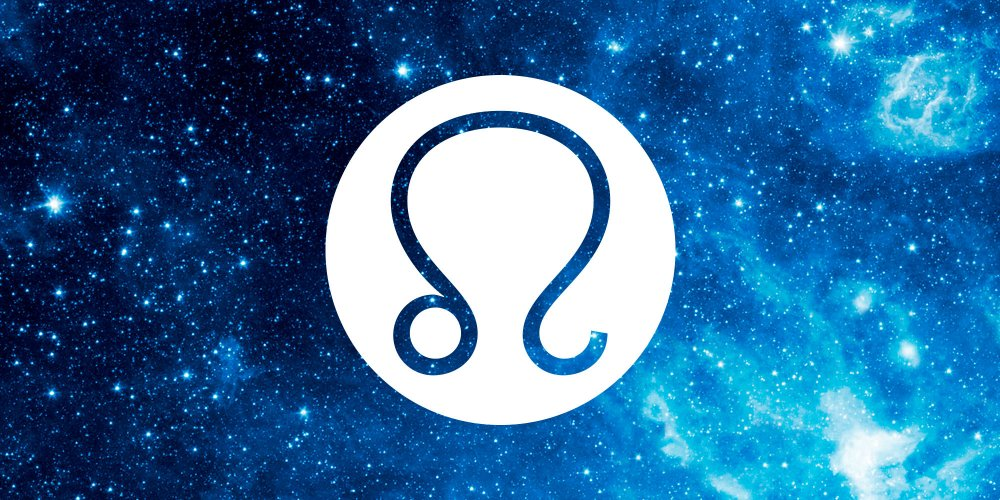
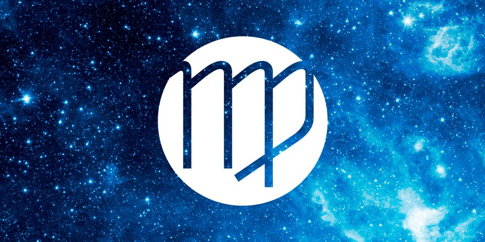
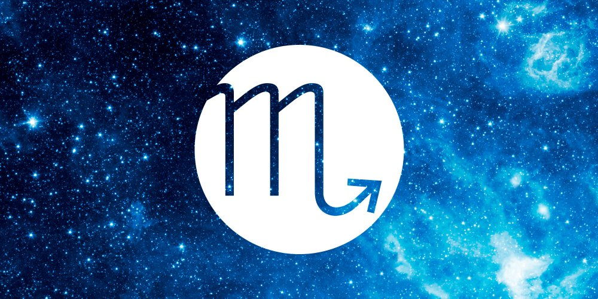
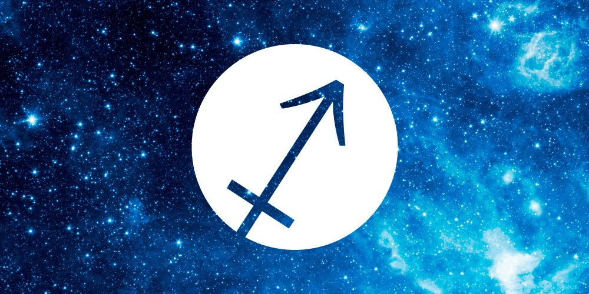
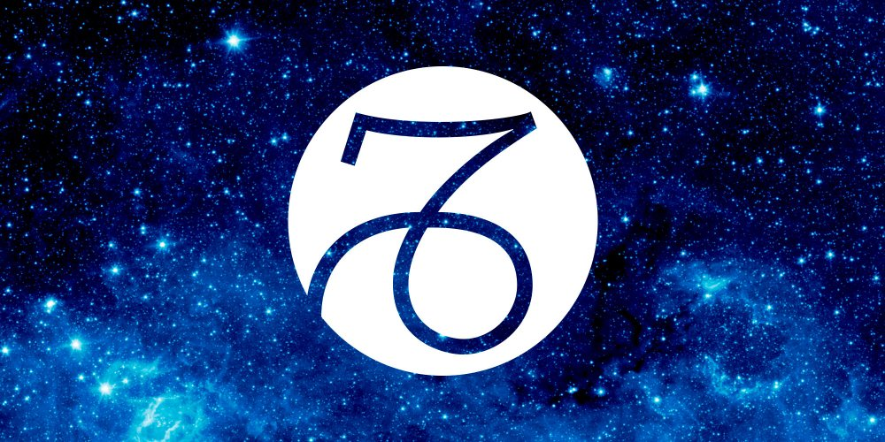
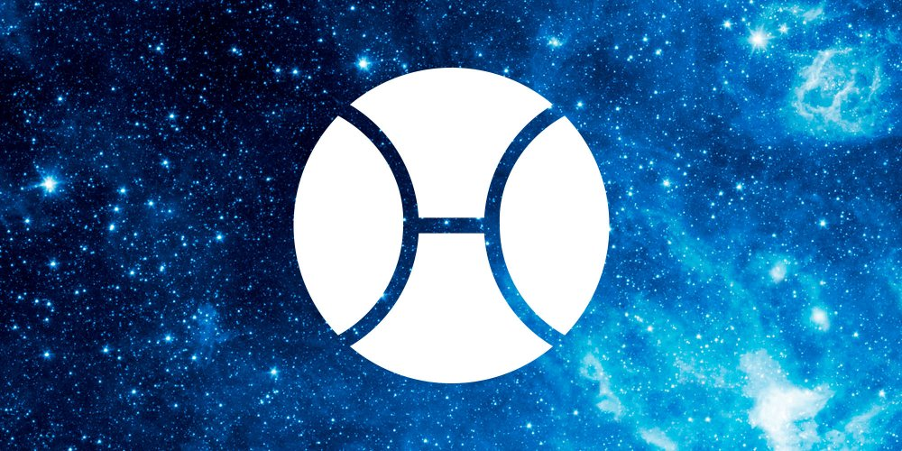

BELIER

Symbolisme et caractère : Dans le zodiaque, le Bélier symbolise l’action, l’élan, l’enthousiasme. C’est un signe d’impulsion, voire d’impulsivité, dynamique, conquérant, pionnier, qui fonce. Il est audacieux, plein d’ardeur. Il est l’énergie de tous les commencements, du leadership.
Obstiné, impatient, extraverti, il se laisse guider par ses coups de tête et n’en fait, du reste, qu’à la sienne. Il est ambitieux, cherche à être le premier, et veut le succès. Fort, brave, imprudent, il s’enflamme pour des causes qu’il croit juste et aime la confrontation. Combatif, il peut faire preuve de brusquerie voire de violence. Son côté passionné lui fait s’investir à fond pour un nouveau challenge, dont il se désintéresse très rapidement pour passer à autre chose.
Il est connu pour son franc-parler et ses gaffes : Il a l’art de mettre les pieds dans le plat et de détester la langue de bois. Il suit très difficilement les conseils et se fie à son instinct très sûr. Malgré son côté indéniablement chaleureux et sympathique, il a l’art d’irriter par son aspect brut et sec : Il manque de moelleux et de diplomatie. Attention à son autoritarisme !
Jamais découragé, même devant l’échec, il se relève toujours pour recommencer : Il oublie vite les contrariétés, les « non », et même les crasses. Il réagit à chaud sur le moment, puis passe rapidement à autre chose : Il n’est pas rancunier. S’il se sent en tort, il pourra mal réagir et faire preuve de mauvaise foi, puis revenir tout penaud.
Créatif, original, il aime le mouvement, le changement et la nouveauté : Il risque de s’éparpiller et devra apprendre à faire preuve de discipline et de constance s’il veut réaliser ses objectifs.
En amour, c’est un spécialiste du coup de foudre, et s’enflammera comme un brasier : Il est tout entier fait de désirs, davantage que de sentiments. Il aime partir à la conquête de l’autre et usera de toutes les stratégies pour faire céder « sa proie ». Quand il dit qu’il aime et qu’il veut, c’est toujours sincère. Par contre, il manque de patience et pourra même faire preuve d’indélicatesse si « l’objet » de sa convoitise le fait trop attendre. Il a la routine en horreur et s’il s’ennuie dans son couple, il tombera amoureux ailleurs : Il a besoin de passion et de stimulation.
Mots clés : Impulsion, action, départ, entreprise, direction, précipitation, conscience, éveil, énergie, élan, enthousiasme, ardeur, genèse, courage, combativité, générosité, impatience, autoritaire.
TAUREAU

Dans le zodiaque, le Taureau symbolise la matière, la stabilité, l’obstination, la loyauté, la solidité, la possessivité, la jalousie. C’est un être fiable, tenace, patient et persévérant. Lié à la nature et la terre, il est qualifié de signe fertile : On parle même d’abondance et de luxuriance. Il représente la vie incarnée. Son plaisir passe par l’acquisition des choses, expériences et êtres : C’est un conservateur qui déteste le changement. Calme, placide et tranquille, il aime avancer à son rythme et présente une personnalité très équilibrée, « les sabots bien ancrés dans la terre ». Sa nature secondaire fait qu’il prend son temps avant de se mettre en action. Il soupèse chaque décision afin de s’assurer qu’elles vont dans le sens de la préservation de sa sécurité : Il aime savoir où il va et construire sur des bases solides.
Il est foncièrement honnête et sa parole est en or. Généreux, il a cependant besoin de se sentir à l’abri avant de faire partager ses largesses : Il a très peur du manque.
Entêté, il est impossible de le faire changer d’avis ou de lui donner des ordres : Il campe sur ses positions et a des idées bien arrêtées. Peu influençable, il en voudra à celui qui tentera de le manipuler en jouant sur son point faible, son bon cœur : Il ne sait pas dire non à ceux qu’il aime.
Pugnace, endurant et travailleur, il se débrouille toujours à surmonter les difficultés de la vie avec un esprit « terrien » et créatif.
Son problème vient de sa difficulté à changer de direction : Il manque de souplesse et d’adaptation et cherche toujours à conserver le confort et les habitudes auxquels il est très attaché.
Gagner de l’argent est fondamental pour lui et il a le sens inné de la gestion : Posséder lui donne une sensation de jouissance et de bien-être.
En amour, il est sensuel, tactile, et a un énorme besoin de tendresse et de câlins. Très tôt, il sera concerné par l’appel des sens et pourra même être un vrai bourreau des cœurs, tant son charme est grand. Malgré tout, il recherchera très vite un partenaire de vie. Il est généralement fidèle et se montre possessif et jaloux avec la personne aimée. Chaque rupture laisse des traces douloureuses dans son âme et il lui faut beaucoup de temps pour s’en remettre. Amoureux, il est capable de trésor de douceur et d’un insatiable appétit charnel. Il aspire à fonder une famille et à partager une vie calme. En cas de trahison, il est rancunier et ne manquera pas de laisser exploser une de ses légendaires et tonitruantes colères.
Mots clés : Acquisitions, possessions, ténacité, matérialisme, jouissance, stabilité, réalisme, confort, gestion, matière, avidité, fertilité, intérêts, gourmandise, sécurité, entêtement, jalousie, argent, fidélité.
GEMEAUX

Symbolisme et caractère : Dans le zodiaque, les Gémeaux symbolisent la communication, le mouvement, les échanges, la curiosité et l’intelligence. Il est en relation avec l’adolescence, les études, les écrits, courriers, correspondances, les chiffres, lettres, les idées, le mental. Il régit le commerce, et représente les frères et sœurs.
Agréable, léger, amusant et spirituel, c’est un bout en train sociable et charmeur. Toujours en mouvement, il est spontané, souple, adaptable et déteste la routine. Il a beaucoup d’amis et sa compagnie plaisante est recherchée. Il est toujours au courant des derniers potins : C’est un bavard incurable qui manie le langage avec brio. Il jongle avec les mots, c’est le saltimbanque du verbe et peut transformer n’importe quelle anecdote insipide en roman d’aventure palpitant : Affabulateur, il peut aussi être un grand menteur !
Il a en permanence besoin de stimulation mentale et intellectuelle et se comporte souvent comme un éternel étudiant : Il multiplie les talents et les compétences, mais souvent survole les choses. Il tombe souvent dans le dilettantisme et s’empêche d’aller aussi loin qu’il le souhaiterait à cause de son côté touche-à tout : Il peut du reste en ressentir un complexe et ne pas se croire à la hauteur de certaines responsabilités.
Sous un aspect superficiel et insouciant, il cache un fond anxieux et beaucoup d’émotions avec lesquelles il se sent mal à l’aise. Il utilise alors une stratégie de fuite qui consiste en une pirouette de dérision afin de conserver son masque et faire bonne figure : Il ne trompe que lui-même !
Amoureux du changement, il aime le voyage, les nouveaux horizons et les projets excitants : Son ouverture d’esprit et sa créativité mentale sont des atouts précieux.
D’un naturel optimiste, il voit le bon côté des choses même face à l’adversité, en fait, il nie souvent les problèmes car cela l’ennuie. Sa capacité à transformer la réalité peut en faire un manipulateur, plus par jeu que par stratégie : Il doit apprendre la responsabilité dans ses propos et vis-à-vis des personnes qui lui accordent leur confiance.
En amour, il est séduisant, léger, charmant et agréable : Il aime découvrir l’autre. Il butine, folâtre, passe de fleur en fleur et multiplie les expériences. Il est très superficiel, surtout dans sa jeunesse et va rarement jusqu’au bout des histoires qu’il commence. Il est effrayé par l’engagement et craint de perdre sa liberté en « devenant sérieux ». C’est pourtant un vrai romantique, qui rêve de l’amour fou, mais qui vit les choses avec son mental, suivant un idéal qui correspond peu à la réalité. Il va rechercher les sensations à travers le flirt et le papillonnage. C’est avec le temps et la maturité, quand il se connait davantage et qu’il ne se cherche plus au travers du miroir de l’autre, qu’il peut enfin vivre une histoire pleine d’amour et de respect.
Mots clés : Communication, pensée, adolescence, vivacité, mobilité, superficialité, adaptabilité, multiplication, addition, respiration, relation, vibration, information, diffusion, dualité, écriture, alphabet, nombre, étude, versatilité, inconstance, éparpillement, conviction, animation, curiosité, intellectuel, éloquence, ingéniosité.
CANCER

Symbolisme et caractère : Dans le zodiaque, le Cancer symbolise la famille, le foyer, le domicile, les origines, le passé, les parents et surtout la mère. Ce signe est doté d’une grande imagination, de sensibilité et vit beaucoup dans la nostalgie de son enfance. Associé au féminin maternel, c’est le signe de la fécondité et de la gestation : Il représente la matrice, l’océan primordial. Il est dit que le Cancer est la porte d’entrée des âmes dans l’incarnation.
Inquiet, intuitif, fragile, il est l’inconscient, la foule, le public, la mémoire, les fluctuations, les mouvements d’humeur, le caprice. Il a un grand besoin de sécurité, de rêve, de douceur.
Il a très peur d’être abandonné et sait très tôt se rendre indispensable auprès des siens : Son côté « enfant » le rend attachant. Très timide, il se forge une carapace, parfois montrant un caractère désagréable et agressif pour se protéger du monde extérieur. Attention, lorsqu’il se fâche, il se met à bouder et peut être particulièrement tenace : C’est souvent à l’autre de faire le premier pas.
Il a besoin d’évoluer dans un climat de sécurité, c’est pour cela qu’il est davantage à l’aise dans son clan, son monde familier, pour s’ouvrir et s’épanouir. Il a besoin de se sentir dans une atmosphère accueillante pour travailler et donner le meilleur de lui-même. Les climats conflictuels le heurtent et l’empêche de libérer sa grande imagination et sa créativité. Il peut facilement devenir un bourreau de travail, car il est sérieux, loyal et consciencieux : C’est un tenace qui ne lâche pas et saura assumer les responsabilités qu’on lui confiera dans son travail.
Quand il abandonne la croyance qu’il a d’être faible et sans défense, il peut devenir protecteur : Il fait d’ailleurs un parent attentionné et présent, très concerné par l’éducation de ses enfants.
Il possède une personnalité narcissique, centré sur lui et fait en sorte d’attirer l’attention, car il n’aime pas l’indifférence. Il peut même devenir arrogant quand il croit posséder un savoir et une connaissance supérieurs aux autres.
Il est naturellement attiré par les activités artistiques car il peut laisser s’épanouir sa grande créativité. Il peut faire une belle carrière publique car il sait s’attirer la faveur des foules. Il a une affinité spontanée avec la nature, le monde de l’enfance, mais aussi celui des personnes âgées.
En amour, il est tendre et sentimental et fait partie des personnes dites « dépendantes affectives ». Il cherche souvent un partenaire qui le protégera. Lorsqu’il se sent en confiance, il est sensuel, gourmand, généreux, mais aussi possessif et jaloux : Il adore les câlins. Il cherchera très vite à fonder un foyer, car l’aventure ne le tente pas : C’est un fidèle. Lorsqu’il devient parent, il dévoile sa vraie nature, protectrice et forte : Il est capable de tout pour assurer aux siens le confort et la douceur de vivre et peut devenir violent et agressif, si on veut faire du mal à sa famille.
Mots clés : Sensibilité, fécondité, enfance, sentiment, attachement, foyer, hérédité, influençabilité, racines, gestation, passé, patrimoine, romantisme, multitude, flou, alimentation, mère, inconscient, origine, base, reproduction, imagination, intuition, instabilité, caprice.
LION

Symbolisme et caractère : Dans le zodiaque, le Lion symbolise la puissance et la royauté. Il est la générosité, l’orgueil, la gloire, la noblesse, l’idéalisme, le rayonnement, mais aussi la flatterie, la vanité et l’arrivisme. Il est le signe de l’amour, du cœur, de la création, que ce soient nos œuvres ou nos enfants. Il y a toujours une idée de luxe, de plaisirs et de fêtes avec le Lion. Il est le monde des loisirs, du théâtre, de l’éducation. C’est l’ambition, l’autorité, l’ego, la passion et la tyrannie.
Le Lion a besoin de se faire admiré et d’être le centre de l’attention. Il aime se mettre en valeur et qu’une cour gravite autour de lui comme les planètes autour du Soleil. Dominateur, il est fier et déterminé. Il fait tout en grand et n’usurpe pas sa réputation de « m’as-tu vu » : Il veut qu’on le regarde. Hédoniste, il aime la vie et ses plaisirs, mais aime partager : Il est très généreux et même large.
La plupart du temps, il est aimable et courtois et est habitué à se faire obéir : Ses désirs sont des ordres et il peut faire de grosses colères si les choses ne se déroulent pas selon sa volonté.
Volontaire, il sait très tôt ce qu’il veut dans la vie et usera de discipline pour l’obtenir : Il ne ménage pas ses efforts et a le courage de ses ambitions. Il peut très facilement devenir despotique avec son entourage, car il attend que tous se mobilisent pour l’aider à réaliser ses rêves : Il le vaut bien !
Il est narcissiquement fragile et a besoin du regard approbateur de « son groupe » pour avancer. Répétez-lui qu’il est le plus grand et qu’il va y arriver, et il le fera. Il a besoin d’émulation et est dépendant à l’admiration qu’on lui porte : Si un jour il reçoit les acclamations de la foule, il ne pourra plus vivre sans.
Loyal, entier et franc, il ne comprend pas la médisance et la mesquinerie : Il n’est pas armé contre les coups bas, mais par contre, sait très bien se défendre en cas d’attaque directe. Il vaut mieux ne pas l’avoir pour adversaire. Il est taillé pour la démesure et le grandiose : C’est le roi du zodiaque !
En amour, il est ardent, passionné, généreux et idéaliste. C’est un séducteur qui rassure souvent son ego à travers ses conquêtes. Il a un tempérament loyal et honnête, et aime l’idée sociale du mariage et de la famille : Il veut trouver l’âme sœur. Toutefois, il a le sang chaud et aime la conquête : Il aura beaucoup de mal à refuser les sollicitations de l’autre sexe. Signe de l’amour, il ne peut pas vivre sans, et s’il le perd, il pourra douter de lui : Il a besoin d’être aimé.
Mots clés : Rayonnement, volonté, amour, confiance, assurance, création, autorité, générosité, orgueil, fierté, décision, chaleur, égocentrisme, théâtral, domination, éclat, puissance, gloire, lumière, fidélité, flatterie, leader, apparence, susceptibilité, courage, vanité, arrogance, franc.
VIERGE

Symbolisme et caractère : Dans le zodiaque, la Vierge symbolise l’analyse, la méthode, l’organisation, le classement, les mesures. C’est un esprit logique, perfectionniste, travailleur, pratique, serviable, critique, complexé, soucieux du détail. Angoissé, il fait preuve de timidité et se protège de toute forme d’invasion : Il cherche la préservation et la sécurité. C’est le signe lié à la médecine, la santé, la diététique et l’hygiène. C’est un maniaque souvent obsédé par le ménage et les tâches quotidiennes. Ingénieux et technique, il met ses talents au service des autres.
Obsédé par l’ordre, il aime que les choses soient faites dans les règles de l’art, mais ses règles à lui : C’est le champion du conseil et de la critique. Ce signe est tatillon, a toujours le dernier mot et irrite souvent son entourage à force de faire mieux que tout le monde. Toutefois, sa serviabilité le rend indispensable et son esprit pratique fait des merveilles devant n’importe quel problème.
Il a un grand manque de confiance en lui et se retrouve relégué au second plan par ceux qui ont plus de culot pour se mettre en avant. Sa modestie ne l’aide pas toujours.
Insatisfait, frustré et rigide, c’est un anxieux qui est mal à l’aise avec ses émotions : Il se cache derrière un masque de froideur et de contrôle dont il peine à se débarrasser. La Vierge a beaucoup de mal à se laisser-aller. Lorsqu’il stresse, il se rigidifie et devient encore plus perfectionniste et autocritique : Son exigence vis-à vis de lui-même est énorme.
Dévoué, il peut se sacrifier pour ceux qu’il aime et donne le meilleur sans rechigner : Le natif de la Vierge n’est jamais autant heureux que lorsqu’il se sait indispensable !
D’ordinaire discret, il peut se transformer en vraie pipelette et colporter tous les commérages.
En amour, ce signe est pudique, critique et peu sentimental. Il veut maîtriser ses instincts et tout ce qu’il y a d’humain chez lui, surtout la part émotionnelle. Timide, complexé, peu sur, il a une grande crainte d’être rejeté. Pourtant, il arrive, que débarrassé de ses inhibitions la Vierge dite sage se transforme en Vierge folle et devienne sexuellement débridé : Toutefois, il y aura toujours la volonté de garder le contrôle. Signe lié au célibat, il choisit souvent de vivre seul, car est capable de s’auto-suffire. Lorsque la Vierge choisit le mariage, c’est par confort ou raison.
Mots clés : Purification, chasteté, analyse, critique, ordre, raison, division, doute, soustraction, limitation, réserve, pratique, méthode, détail, égoïsme, service, travail, technique, médecine, virginité, manie, précision.
BALANCE
Symbolisme et caractère : Dans le zodiaque, la Balance symbolise l’équilibre, la paix, la justice et l’harmonie. Elle représente, l’union, le mariage, les associations et les contrats. Ce signe a de l’élégance, de la grâce, des dons pour la danse et une grande sociabilité. Ces natifs détestent la solitude. Le besoin d’être aimé, regardé est important, tout comme le goût du beau et du raffiné. Représente la médiation, les arbitrages, l’hésitation dans les choix, les réunions et les mondanités. Ce signe est artistique, vaniteux et aime être à la mode. Recherche la facilité et peut tomber dans la compromission par excès de diplomatie.
La Balance est connue pour son indécision, car elle veut faire le tour d’une question avant de se décider. Trancher lui pose toujours problème, car cela suppose de mettre un aspect de côté pour en adopter un autre, et en tant que signe du lien, il lui faut ajouter et non soustraire.
Il fait beaucoup d’effort pour aplanir les différents et est connu pour sa gentillesse, son altruisme et son sens des contacts. Sous un abord souriant, il reste néanmoins distant et froid et n’est nullement faible ou influençable : Il y a beaucoup de poigne et de détermination, mais toujours dans la mesure.
Affectif et pacifiste, il fuit les conflits et se débrouille pour créer une atmosphère de confiance et de collaboration : La Balance est la manifestation parfaite de l’adage « l’union fait la force » !
Son goût pour l’ordre et l’harmonie parfaite, lui donne l’horreur du vulgaire, du laid et du sale : Il veut organiser sa vie autour de la beauté et du raffinement. Il a un chic naturel et un goût vestimentaire très sûr. Sa recherche de la beauté et l’élégance peut le rendre superficiel, car il s’arrête à l’enveloppe et n’a pas l’œil qui voit l’intériorité des choses. Toutefois, sa finesse psychologique lui enseigne toujours de chercher la vérité dans l’ordre et la justice : Son sens de la justice lui donne une grande ouverture d’esprit et avec le temps, il apprend à développer écoute et empathie envers les plus démunis.
Epris de la paix et de la tranquillité, il est capable de charmer jusqu’à la manipulation pour faire agir les autres à sa place : C’est un grand comédien !
En amour, ce natif est romantique, et recherche l’harmonie et la paix. En tant que signe du couple et du mariage, il lui est difficile de vivre seul, et à ce titre, est prêt à toutes les concessions pour préserver les liens qu’il tisse. Ayant la solitude en horreur, il choisit très tôt de se mettre en ménage. Sa sensualité est grande et il a besoin d’être regardé, aimé et désiré. Il y a quelque chose de très narcissique en lui : Il a un besoin vital de plaire. Leur beauté et leur charme sont légendaires, tout autant que leur exigence esthétique : Il a horreur de la laideur et de la vulgarité. Il fait toujours beaucoup d’effort pour atteindre la perfection en tout, au risque de perdre en authenticité.
Mots clés : Equilibre, justice, harmonie, choix, sociabilité, diplomatie, arbitrage, conciliation, hésitation, union, mariage, opposition, esthétisme, paix, séduction, complémentarité, collaboration, équité, conventionnel, snob, artistique, goût, plaire, prévenance, inconstance.
SCORPION

Symbolisme et caractère : Dans le zodiaque, le Scorpion symbolise la mort, la fin des choses, les transformations et la sexualité. Il représente, l’instinct, la passion, le désir animal et sexuel, ainsi que tout ce qu’il y a de destructeur chez l’être humain. C’est le mystère, le secret, la mutation et la régénération. Il y a en ce signe du pouvoir, de la magie et la clé de la réincarnation. Extrême, tyrannique, excessif, il aime casser pour reconstruire selon un idéal de pureté : Il peut devenir sadique, violent, jaloux, rancunier et vengeur. Fasciné par l’outrance, il peut aimer l’érotisme, la pornographie, et tout ce qui peut révéler les basses pulsions humaines. Il a l’art de déceler toutes les faiblesses, mesquineries et petitesse de l’homme : Il voit à travers la matière et son sens psychologique est surpuissant.
Le Scorpion est entier et loyal, il accorde son affection sans limite, par contre, gare à qui en abuserait, il n’y aurait pas d’endroit sur terre pour le cacher de sa vengeance : Il ne pardonne pas la faiblesse et la mesquinerie.
Secret, complexe, manipulateur, menteur, il est difficile à comprendre, car il cache sous ses abords violents, un naturel affectueux et aimant. Il est entièrement animé par de violentes émotions qui le secouent comme des convulsions et le transforment en désirs ardents et instincts violents. Il voudrait se dominer avec son intelligence et sa raison, mais il échoue, car son énergie est faite de naissance, mort, métamorphose, elle ne se contrôle pas. Le Scorpion est un idéaliste qui a besoin de se consacrer à une juste cause. Sa sensibilité est si grande, qu’il attaque le premier, anticipant l’hostilité extérieure : Il est capable de beaucoup d’agressivité.
Déterminé, volontaire et acharné ; il ne lâche quelque chose que lorsqu’il a terminé : Il travaille dur et se donne à fond. Entêté, on ne le fait pas changer d’avis et il est tout sauf faible : Il veut dominer et diriger.
En cas de désaccord, il vaut mieux abandonner la partie et éviter de le pousser à bout : Il est incapable de s’arrêter et combattra jusqu’à « la mort », de l’autre. Si vous l’avez trahi, fuyez ! Il détient le record dans les faits divers.
En amour, il est passionné, magnétique et jaloux. Sa vie sentimentale est souvent compliquée et on peut même penser qu’il fuit la simplicité. Il a un besoin de pouvoir, d’absolu et de possession sur l’autre : Il veut fusionner. Il adore défier la moral et passer pour transgressif et sans tabou, surtout sexuellement où il recherche à faire le maximum d’expériences. Il ne supporte pas la tiédeur des sentiments et préfère créer un psychodrame plutôt que de vivre dans la platitude : Il est entier et ne conçoit que l’amour ou la haine. Il a la réputation d’être un amant extraordinaire qui utilise son pouvoir en contrôlant le plaisir du partenaire : Le Scorpion possède l’autre. Plus sentimental qu’il ne le voudrait, il s’attache et avec le temps, se pacifie et fait un conjoint loyal et protecteur : Il a le sens de la famille et adore ses enfants.
Mots clés : Transformation, mutation, régénération, exigence, angoisse, destruction, reconstruction, mort, renaissance, réincarnation, sexualité, passion, magnétisme, rancune, vengeance, secret, occulte, ésotérisme, initiation, instinct, remise en question, envie, tentation, pénétration, possession, insécurité, pulsion, dissection, ambition.
SAGITTAIRE

Symbolisme et caractère : Dans le zodiaque, le Sagittaire symbolise l’évolution spirituelle et intellectuelle. Ce sont les hautes études et le mental supérieur : Philosophie, théologie, religion, loi, ésotérisme. Ce signe représente l’étranger et les voyages lointains, l’outre-mer. Il y a de l’optimisme de la positivité. Ce signe est jovial, indépendant, joueur, aventurier, imprudent, enthousiaste est surtout chanceux. Il indique les rêves prophétiques et a valeur de protection : Il porte bonheur.
Signe de l’étranger et des grands espaces, c’est un mustang sauvage qui aime parcourir le monde en liberté : Il a besoin d’une activité qui le laisse libre de gérer son temps, car il a du mal à se soumettre, à entrer dans un carcan. Il y a chez lui un côté bourgeois et conventionnel, qui se heurte à un côté sauvage et indompté : C’est un paradoxe, difficile à cerner et qui a l’art de brouiller les pistes.
Ennemi de la routine, il peut multiplier les activités et s’engage dans plusieurs choses qu’il ne termine que rarement. Il a aussi du mal à tenir ses engagements, car il promet, promet et passe à autre chose : Il est sincère sur le moment.
Chaleureux, généreux, joyeux, expansif, il s’embrase pour un projet et peut faire preuve d’impatience et d’enthousiasme, tant que cela n’empiète pas sur sa liberté, car alors, il devient égoïste et même agressif. Provocateur et volontiers insolent, il manque de diplomatie et dit les choses franchement, sauf si ses intérêts sont en jeu : Là il est capable d’hypocrisie, de mensonge et de mauvaise foi.
Volontiers moralisateur, il déteste, en revanche, qu’on lui donne des conseils ou qu’on lui mette le nez dans ses contradictions : Il devient alors susceptible et coléreux, et peut même prendre la fuite ou mentir honteusement.
Sa double personnalité en fait un des signes les plus instables sentimentalement. Malgré la sympathie qu’il suscite, il n’est pas fidèle, ni pour ses amours, ni pour ses amis. Par contre, il peut se montrer jaloux et envieux, et se compare souvent aux autres : Le sens de la compétition est très développé chez lui, et il en veut toujours plus.
En amour, c’est un idéaliste, séducteur, positif et conquérant. Il rêve de trouver l’âme sœur et en même temps se conduit souvent comme un jouisseur, paillard, en quête de mille plaisirs : Il est double et paradoxal. Il y a deux types de centaure, le premier veut faire toutes les expériences sensuelles et gourmandes, et préservera sa liberté, et le second, comme les chevaliers du passé, aspire à vivre l’amour vrai et pur. Toutefois, on rencontre souvent le type mixte, qui alternera les deux comportements au cours de sa vie. Il aime la liberté et s’il se marie, c’est souvent par convention. Par contre, il adore les enfants et sera heureux d’en avoir une ribambelle. Il vieillit lentement et la maturité lui apporte la sérénité : Il sera heureux de partager un amour sincère et sensuel avec un partenaire qui partagera sa curiosité et son goût du voyage.
Mots clés : Evolution, croyance, expansion, loi, maitrise, aspiration, spiritualité, espace, aventure, idéalisme, jovialité, optimisme, enseignement, prophétie, philosophie, étranger, voyage, religion, représentation, guide, protecteur, franchise, instinctif, indomptable.
CAPRICORNE

Symbolisme et caractère : Dans le zodiaque, le Capricorne symbolise l’ambition, le sommet à atteindre, l’élévation sociale lente mais certaine. Ce signe représente la montagne, le dépouillement, la solitude, la maturité, la frugalité, la persévérance, la patience et même l’avarice. C’est un indice de responsabilité, confiance, position élevée, devoir, méthode, intégrité et organisation. C’est une zone de frustration, prudence, retenue, froideur, rigueur, détachement et sagesse. Il est associé à la connaissance et l’expertise.
Il a la réputation d’être vieux avant l’âge et déjà tout petit, va se montrer sérieux, raisonnable, réfléchit et responsable. Très concerné par le devoir, il se montre travailleur assidu et préfère les activités sérieuses aux divertissements qu’il trouve superficiels et inutiles. Il montre très tôt des qualités de fiabilité et d’honnêteté, et aspirera à travailler et s’assumer dès qu’il le pourra : Il est un des rares à préférer l’école et son boulot aux vacances.
Sensible, introverti, il a besoin de se réaliser socialement et de trouver approbation et respect dans son environnement professionnel : Il ne rechignera sur aucun effort pour mériter la confiance de son employeur.
Il lui faut du temps, du travail, pour enfin prendre conscience de sa valeur et avoir confiance en lui. Il se bonifie, s’allège et rajeunie même avec les années, lorsqu’il n’a plus rien à prouver aux autres et à lui-même.
Taciturne, c’est un solitaire convaincu qui frôle la misanthropie : Il se suffit à lui-même et peu même se complaire dans une espèce d’avarice de sentiment, centré sur sa réalisation sociale, l’augmentation de ses gains, l’achat de sa maison ou de sa terre… Il a peu d’amis, qui auront le mérite de l’aimer et le relancer, car si lui est aussi fidèle, il est surtout « avare de son temps et sentiments », et fait passer les autres après ses intérêts socioprofessionnelles : En fait il pense que comme lui n’a besoin de personne, les autres n’ont pas besoin de lui… Il doit s’ouvrir et sortir de son handicap relationnel !
Extérieurement, l’image froide et dure lui colle à la peau et il fait souvent davantage penser à une porte de prison qu’à un nounours en peluche : A croire qu’il fait exprès de faire fuir les autres. En fait, il est tendre et sensible, mais à tellement peur de se faire avoir, qu’il se dissimule sous une « couche de glace ». Rabat-joie, ce n’est pas un fêtard ni un faiseur d’ambiance, pourtant ceux qui ont dans leur intimité un Capricorne auront au moins une fois la chance de se faire surprendre par leur humour pince sans rire : Ce jour là profitez-en, vous ne le reconnaîtrez pas !
En amour, il est timide et complexé et se sent démuni lorsqu’il s’agit d’émotions et sentiments. Il est malhabile et même handicapé avec les affaires du cœur. Plein de doutes il a peur de se faire avoir et préférera rester dans sa réserve plutôt que de prendre le risque de donner son amour, se faire piétiner et se retrouver ridicule et moqué : C’est un orgueilleux qui aspire à l’amour sincère et authentique mais qui s’y prend très mal. Si malgré tout, une personne sincère voulait le conquérir, elle passera le parcours du combattant et sera soumise à une batterie de tests : Il est difficile de trouver le chemin de son cœur. Toutefois, avec le temps et lorsque sa confiance est gagné, il se révèle tendre, passionné, fidèle et d’une grande profondeur : Il peut devenir torride, insatiable et même volcanique. Il doit apprendre à mettre plus de légèreté dans sa vie, et heureusement, avec les années, il apprend à être heureux et bien dans sa peau. Il a le sens de la famille.
Mots clés : Patience, détachement, sagesse, élévation, concentration, endurance, objectivité, opiniâtreté, persévérance, prudence, organisation, solitude, administration, ambition, méditation, expérience, avarice, frugalité, dépouillement, réalisation, réflexion, montagne, arrêt, retard, sérieux, arrivisme, défiance, froideur.
VERSEAU
Symbolisme et caractère: Dans le zodiaque, le Verseau symbolise le futur, la modernité, l’amitié, la liberté et la fraternité. Il représente la science, les idées d’avant-garde, l’espace, les ondes, le cinéma, l’électricité, internet, les nouvelles technologies. C’est l’utopie, l’originalité, l’humanisme et l’altruisme. C’est le signe de l’astronomie et l’astrologie, des moyens modernes de transport comme les avions et les fusées et de la diffusion de la connaissance de façon égalitaire et généralisée. Le Verseau recherche à développer son individualité en abolissant les systèmes hiérarchisés et étatisés : A ce titre, il représente les révolutions, et l’anarchie.
Signe de l’intelligence et du futur, le Verseau voit grand et développe tout au long de sa vie des idées aussi originales qu’utopiques pour réformer le monde. Son problème réside souvent dans le suivit et la concrétisation des nombreux projets qui traversent son mental bouillonnant. Investi d’un sens social très développé, il a des idées sur tout ce qui peut faire évoluer nos sociétés et se heurtent aux pensées conservatrices et timorées qui l’entourent. Il vit dans ses pensées, le plus souvent coupé de ses émotions et il est très difficile de le cerner : Son esprit va trop vite, et il semble si loin de cette planète.
Il rêve d’un monde meilleur, plus humain, où chacun aurait les mêmes droits avec l’abolition des privilèges, et la diffusion généralisée des connaissances et vérités du monde. Il pense que nous sommes aptes à l’autodétermination et que nous pourrions nous passer des systèmes politiques et paternalistes dépassés. Sa vision du collectif est profondément égalitaire et il a foi dans l’homme, son évolution et ses capacités ; du moins, en théorie…Dans la réalité, il se révèle souvent intolérant, sec et fait preuve d’orgueil spirituel en ne manquant pas à chaque occasion de traiter de mouton tout ceux qui regarde la télé réalité au lieu de faire du développement personnel, comme lui. Il s’érige en modèle et sa pensée peut se rigidifier : Le problème vient de sa capacité à se déshumaniser en se coupant de ses ressentis, et de ce fait, se comporter comme ce qu’il combat le plus par ses idées, un bourgeois plein de préjugés ! Paradoxe que ce signe qui peut alors faire cohabiter tous les antagonismes.
Il a besoin de se rendre utile, il faut utiliser son énergie mentale à le faire réaliser des projets ; s’il reste à s’aigrir, c’est une catastrophe, car sa révolte se retourne contre le monde et il peut alors se marginaliser, et tel Diogène, développer un comportement marginal et asocial. Il pense souvent détenir la vérité et se remet difficilement en question.
En amour, il se méfie de la passion, sa préférence va à l’amitié amoureuse qui lui préserve sa liberté en évitant les liens qui pourraient l’enfermer. Il choisira un partenaire créatif, intelligent, cultivé et compréhensif, qui saura ne pas se sentir jaloux ou abandonné, quand lui aura besoin d’être avec ses amis ou de rester avec lui-même pour réfléchir. Il s’épanouira avec un conjoint autonome affectivement et qui saura gérer la réalité matérielle, lui-même étant plus dans la conception des projets que dans le règlement des factures. Généralement, il préférera le Pacs, l’union libre au mariage, car les conventions sociales le rebutent. Il aime abolir les tabous et préjugés, les races et les sexes et à ce titre représente le signe de l’homosexualité.
Mots clés : Révolution, altruisme, amitié, fraternité, connaissance, observation, opportunisme, contradiction, serviabilité, résistance, liberté, futur, modernité, mode, indépendance, originalité, cosmos, univers, invention, rythme, vitesse, tolérance, sympathie, utopie, égoïsme, intuition, ingéniosité, cinéma, télévision, extravagance, électricité, espace.
POISSONS

Symbolisme et caractère : Dans le zodiaque, les Poissons symbolisent l’infini et l’illimité. C’est la foi, le mysticisme. Il dote de nombreux dons artistiques, surtout la musique. Nous sommes dans le monde inconscient, intuitif et clairvoyant. Ce signe représente le sacrifice, l’épreuve, l’enfermement, le mystère, les choses cachées, la trahison et les maladies chroniques. C’est le réservoir de notre richesse intérieure que l’on doit conscientiser et ramener au grand jour. Illusion, imagination, mirage, c’est la fuite de la réalité pour se réfugier dans un monde plus doux, rêvé, silencieux et fantaisiste. Sentimental, idéaliste, romanesque, naïf, affabulateur, menteur, impressionnable, il est fortement influençable et se laisse volontiers aller aux addictions de toute sorte.
Double, changeant et paradoxal, il est difficile à cerner et à définir. Son indécision est maladive, son absence de repère aussi. En fait, il aime le déconditionnement et la perte de contours précis, car cela lui permet de vivre dans son monde de fantasme et de se créer une réalité virtuelle. Il arrive même qu’il mène une vie marginale, la nuit par exemple, et faire appel à sa raison ne sert à rien car il cultive l’illogisme et l’ambiguïté.
Comme il vit dans un rêve, il transforme souvent les faits et n’usurpe pas sa réputation de mythomane. Traitez-le de menteur, lui se croit créatif et arrive à se convaincre de ses propres illusions.
Il avance sur un modèle intuitif et la chance l’accompagne souvent : Ce signe fait de grands financiers qui ont un flair incroyable et qui, contre toute logique, gagne avec des placements alors que les modèles logiques s’effondrent. De nombreux scientifiques et découvreurs sont aussi Poissons.
Sa fibre artistique est grande et il est véritablement inspiré : Nous trouvons de très grands musiciens appartenant à ce signe.
Il a besoin d’amour de douceur et sa compassion naturelle le porte vers les plus démunis : Il est capable de se mettre à pleurer pour un chat perdu ou une mamie qui vit seule : Le problème est qu’il n’apporte pas de solution, il se contente de pleurer.
En amour, le Poissons est paradoxal, car il peut faire preuve du sacrifice le plus total ou du don-juanisme le plus débridé. Il aime les ambiances où il s’abandonne totalement, fusionne, communie avec l’autre. Très érotique, il peut même devenir amoral et transgressif en s’abandonnant à tous les excès. Il a besoin d’idéaliser l’autre, de se dévouer, de lui trouver toutes les qualités. De ce fait, il se dévalorise souvent et se sent inférieur, développant la peur d’être abandonné. Lorsqu’il se rend compte que l’objet de son amour est d’abord humain, il n’est pas rare qu’il cesse de lui trouver le moindre intérêt : Ce signe a besoin d’idéaliser. Il doit apprendre à développer la valeur des petites choses et surtout celle du couple, des gestes attentifs, de prendre soin de la personne aimée et de revenir le plus possible aux joies simples de la réalité et sortir des fantasmes.
Mots clés : Compassion, mystère, suggestibilité, réceptivité, intuition, sacrifice, insaisissabilité, sensation, indécision, rêverie, illusion, dévouement, intériorisation, impressionnable, inspiration, mysticisme, souffrance, foi, dissolution, trahison, fuite, insouciance, superstition, image, dédoublement, clairvoyance, évangélisation, imagination, sensibilité.